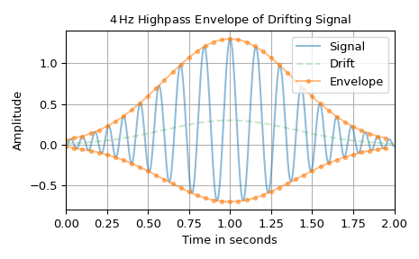
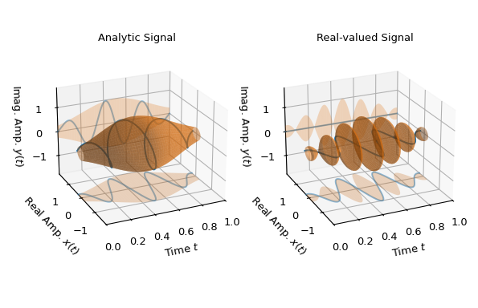

envelope#
- scipy.signal.envelope(z, bp_in=(1, None), *, n_out=None, squared=False, residual='lowpass', axis=-1)[source]#
Compute the envelope of a real- or complex-valued signal.
- Parameters:
- zndarray
Real- or complex-valued input signal, which is assumed to be made up of
nsamples and having sampling intervalT. z may also be a multidimensional array with the time axis being defined by axis.- bp_intuple[int | None, int | None], optional
2-tuple defining the frequency band
bp_in[0]:bp_in[1]of the input filter. The corner frequencies are specified as integer multiples of1/(n*T)with-n//2 <= bp_in[0] < bp_in[1] <= (n+1)//2being the allowed frequency range.Noneentries are replaced with-n//2or(n+1)//2respectively. The default of(1, None)removes the mean value as well as the negative frequency components.- n_outint | None, optional
If not
Nonethe output will be resampled to n_out samples. The default ofNonesets the output to the same length as the input z.- squaredbool, optional
If set, the square of the envelope is returned. The bandwidth of the squared envelope is often smaller than the non-squared envelope bandwidth due to the nonlinear nature of the utilized absolute value function. I.e., the embedded square root function typically produces addiational harmonics. The default is
False.- residualLiteral[‘lowpass’, ‘all’, None], optional
This option determines what kind of residual, i.e., the signal part which the input bandpass filter removes, is returned.
'all'returns everything except the contents of the frequency bandbp_in[0]:bp_in[1],'lowpass'returns the contents of the frequency band< bp_in[0]. IfNonethen only the envelope is returned. Default:'lowpass'.- axisint, optional
Axis of z over which to compute the envelope. Default is last the axis.
- Returns:
- ndarray
If parameter residual is
Nonethen an arrayz_envwith the same shape as the input z is returned, containing its envelope. Otherwise, an array with shape(2, *z.shape), containing the arraysz_envandz_res, stacked along the first axis, is returned. It allows unpacking, i.e.,z_env, z_res = envelope(z, residual='all'). The residualz_rescontains the signal part which the input bandpass filter removed, depending on the parameter residual. Note that for real-valued signals, a real-valued residual is returned. Hence, the negative frequency components of bp_in are ignored.
See also
hilbertCompute analytic signal by means of Hilbert transform.
Notes
Any complex-valued signal \(z(t)\) can be described by a real-valued instantaneous amplitude \(a(t)\) and a real-valued instantaneous phase \(\phi(t)\), i.e., \(z(t) = a(t) \exp\!\big(j \phi(t)\big)\). The envelope is defined as the absolute value of the amplitude \(|a(t)| = |z(t)|\), which is at the same time the absolute value of the signal. Hence, \(|a(t)|\) “envelopes” the class of all signals with amplitude \(a(t)\) and arbitrary phase \(\phi(t)\). For real-valued signals, \(x(t) = a(t) \cos\!\big(\phi(t)\big)\) is the analogous formulation. Hence, \(|a(t)|\) can be determined by converting \(x(t)\) into an analytic signal \(z_a(t)\) by means of a Hilbert transform, i.e., \(z_a(t) = a(t) \cos\!\big(\phi(t)\big) + j a(t) \sin\!\big(\phi(t) \big)\), which produces a complex-valued signal with the same envelope \(|a(t)|\).
The implementation is based on computing the FFT of the input signal and then performing the necessary operations in Fourier space. Hence, the typical FFT caveats need to be taken into account. The frequency spacing
1 / (n*T)for corner frequencies of the bandpass filter corresponds to the frequencies produced byscipy.fft.fftfreq(len(z), T).If the envelope of a complex-valued signal z with no bandpass filtering is desired, i.e.,
bp_in=(None, None), then the envelope corresponds to the absolute value. Hence, it is more efficient to usenp.abs(z)instead of this function.Although computing the envelope based on the analytic signal [1] is the natural method for real-valued signals, other methods are also frequently used. The most popular alternative is probably the so-called “square-law” envelope detector and its relatives [2]. They do not always compute the correct result for all kinds of signals, but are usually correct and typically computationally more efficient for most kinds of narrowband signals. The definition for an envelope presented here is common where instantaneous amplitude and phase are of interest (e.g., as described in [3]). There exist also other concepts, which rely on the general mathematical idea of an envelope [4]: A pragmatic approach is to determine all upper and lower signal peaks and use a spline interpolation to determine the curves [5].
Array API Standard Support
envelopehas support for Python Array API Standard compatible backends in addition to NumPy. The following combinations of backend and device (or other capability) are supported.Library
CPU
GPU
NumPy
✅
n/a
CuPy
n/a
✅
PyTorch
✅
✅
JAX
✅
✅
Dask
✅
n/a
See Support for the array API standard for more information.
References
[1]“Analytic Signal”, Wikipedia, https://en.wikipedia.org/wiki/Analytic_signal
[2]Lyons, Richard, “Digital envelope detection: The good, the bad, and the ugly”, IEEE Signal Processing Magazine 34.4 (2017): 183-187. PDF
[3]T.G. Kincaid, “The complex representation of signals.”, TIS R67# MH5, General Electric Co. (1966). PDF
[4]“Envelope (mathematics)”, Wikipedia, https://en.wikipedia.org/wiki/Envelope_(mathematics)
Examples
The following plot illustrates the envelope of a signal with variable frequency and a low-frequency drift. To separate the drift from the envelope, a 4 Hz highpass filter is used. The low-pass residuum of the input bandpass filter is utilized to determine an asymmetric upper and lower bound to enclose the signal. Due to the smoothness of the resulting envelope, it is down-sampled from 500 to 40 samples. Note that the instantaneous amplitude
a_xand the computed envelopex_envare not perfectly identical. This is due to the signal not being perfectly periodic as well as the existence of some spectral overlapping ofx_carrierandx_drift. Hence, they cannot be completely separated by a bandpass filter.>>> import matplotlib.pyplot as plt >>> import numpy as np >>> from scipy.signal.windows import gaussian >>> from scipy.signal import envelope ... >>> n, n_out = 500, 40 # number of signal samples and envelope samples >>> T = 2 / n # sampling interval for 2 s duration >>> t = np.arange(n) * T # time stamps >>> a_x = gaussian(len(t), 0.4/T) # instantaneous amplitude >>> phi_x = 30*np.pi*t + 35*np.cos(2*np.pi*0.25*t) # instantaneous phase >>> x_carrier = a_x * np.cos(phi_x) >>> x_drift = 0.3 * gaussian(len(t), 0.4/T) # drift >>> x = x_carrier + x_drift ... >>> bp_in = (int(4 * (n*T)), None) # 4 Hz highpass input filter >>> x_env, x_res = envelope(x, bp_in, n_out=n_out) >>> t_out = np.arange(n_out) * (n / n_out) * T ... >>> fg0, ax0 = plt.subplots(1, 1, tight_layout=True) >>> ax0.set_title(r"$4\,$Hz Highpass Envelope of Drifting Signal") >>> ax0.set(xlabel="Time in seconds", xlim=(0, n*T), ylabel="Amplitude") >>> ax0.plot(t, x, 'C0-', alpha=0.5, label="Signal") >>> ax0.plot(t, x_drift, 'C2--', alpha=0.25, label="Drift") >>> ax0.plot(t_out, x_res+x_env, 'C1.-', alpha=0.5, label="Envelope") >>> ax0.plot(t_out, x_res-x_env, 'C1.-', alpha=0.5, label=None) >>> ax0.grid(True) >>> ax0.legend() >>> plt.show()

The second example provides a geometric envelope interpretation of complex-valued signals: The following two plots show the complex-valued signal as a blue 3d-trajectory and the envelope as an orange round tube with varying diameter, i.e., as \(|a(t)| \exp(j\rho(t))\), with \(\rho(t)\in[-\pi,\pi]\). Also, the projection into the 2d real and imaginary coordinate planes of trajectory and tube is depicted. Every point of the complex-valued signal touches the tube’s surface.
The left plot shows an analytic signal, i.e, the phase difference between imaginary and real part is always 90 degrees, resulting in a spiraling trajectory. It can be seen that in this case the real part has also the expected envelope, i.e., representing the absolute value of the instantaneous amplitude.
The right plot shows the real part of that analytic signal being interpreted as a complex-valued signal, i.e., having zero imaginary part. There the resulting envelope is not as smooth as in the analytic case and the instantaneous amplitude in the real plane is not recovered. If
z_rehad been passed as a real-valued signal, i.e., asz_re = z.realinstead ofz_re = z.real + 0j, the result would have been identical to the left plot. The reason for this is that real-valued signals are interpreted as being the real part of a complex-valued analytic signal.>>> import matplotlib.pyplot as plt >>> import numpy as np >>> from scipy.signal.windows import gaussian >>> from scipy.signal import envelope ... >>> n, T = 1000, 1/1000 # number of samples and sampling interval >>> t = np.arange(n) * T # time stamps for 1 s duration >>> f_c = 3 # Carrier frequency for signal >>> z = gaussian(len(t), 0.3/T) * np.exp(2j*np.pi*f_c*t) # analytic signal >>> z_re = z.real + 0j # complex signal with zero imaginary part ... >>> e_a, e_r = (envelope(z_, (None, None), residual=None) for z_ in (z, z_re)) ... >>> # Generate grids to visualize envelopes as 2d and 3d surfaces: >>> E2d_t, E2_amp = np.meshgrid(t, [-1, 1]) >>> E2d_1 = np.ones_like(E2_amp) >>> E3d_t, E3d_phi = np.meshgrid(t, np.linspace(-np.pi, np.pi, 300)) >>> ma = 1.8 # maximum axis values in real and imaginary direction ... >>> fg0 = plt.figure(figsize=(6.2, 4.)) >>> ax00 = fg0.add_subplot(1, 2, 1, projection='3d') >>> ax01 = fg0.add_subplot(1, 2, 2, projection='3d', sharex=ax00, ... sharey=ax00, sharez=ax00) >>> ax00.set_title("Analytic Signal") >>> ax00.set(xlim=(0, 1), ylim=(-ma, ma), zlim=(-ma, ma)) >>> ax01.set_title("Real-valued Signal") >>> for z_, e_, ax_ in zip((z, z.real), (e_a, e_r), (ax00, ax01)): ... ax_.set(xlabel="Time $t$", ylabel="Real Amp. $x(t)$", ... zlabel="Imag. Amp. $y(t)$") ... ax_.plot(t, z_.real, 'C0-', zs=-ma, zdir='z', alpha=0.5, label="Real") ... ax_.plot_surface(E2d_t, e_*E2_amp, -ma*E2d_1, color='C1', alpha=0.25) ... ax_.plot(t, z_.imag, 'C0-', zs=+ma, zdir='y', alpha=0.5, label="Imag.") ... ax_.plot_surface(E2d_t, ma*E2d_1, e_*E2_amp, color='C1', alpha=0.25) ... ax_.plot(t, z_.real, z_.imag, 'C0-', label="Signal") ... ax_.plot_surface(E3d_t, e_*np.cos(E3d_phi), e_*np.sin(E3d_phi), ... color='C1', alpha=0.5, shade=True, label="Envelope") ... ax_.view_init(elev=22.7, azim=-114.3) >>> fg0.subplots_adjust(left=0.08, right=0.97, wspace=0.15) >>> plt.show()
